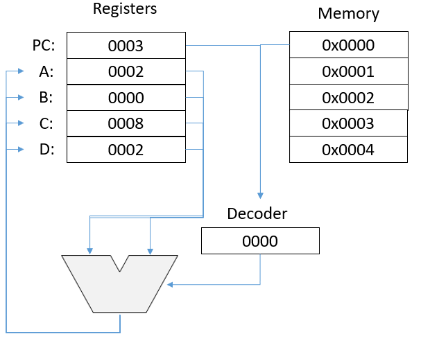
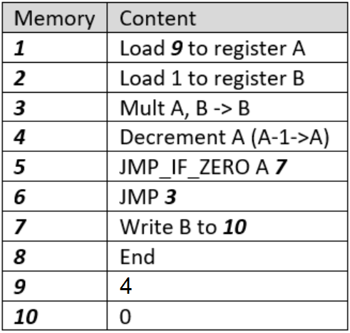

Assignment #10 - Theory of computation
- Purpose
- Create animation that demonstrates the computation method.
- Instructions
-
This assignment will recreate visually the operation of a CPU. The CPU diagram below shows the registers on the left and the instructions on the right. You will want to recreated this on your page.

The code itself is shown here. You will need to recreate this in the instructions on the right.

- Create a table with labeled spaces for five "registers". Put the same register labels A-D and PC as shown. Leave the value spaces as zero.
- Create a new table for the memory. Leave the memory line numbers in cells on the left as shown. Copy the instructions shown above into cells on the right.
- Create functions for each instruction in the set. For instance, instruction 1
Load 9 to register A might be written this way. Note that you would need certain ids on the cells.
function Instr1()
{
document.getElementById("regA").innerHTML=document.getElementById("Mem9").innerHTML;
}
- Instead of a number, put an <input> text into Memory slot 9. This will allow you to get new input from the user at any time.
- Create two buttons: step and reset. When you push reset the PC will return to zero and all the registers will return to zero. Step will execute the current step (i.e. call the function) and move the PC.
- Set up some way to visually track which instruction is pointed to by the PC.
- Put all these elements in a page. Test to make sure the buttons work as expected and resolve any bugs. Test the function with several inputs. It should compute X! so for the value 4 as shown above, the answer is 24.
- Submit the link to the page in Canvas.